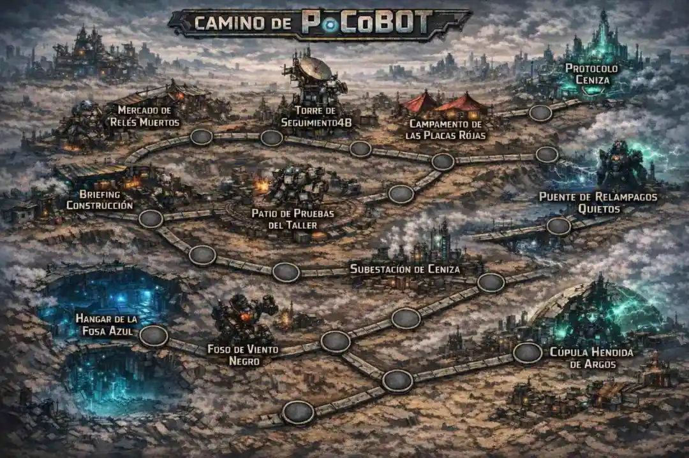
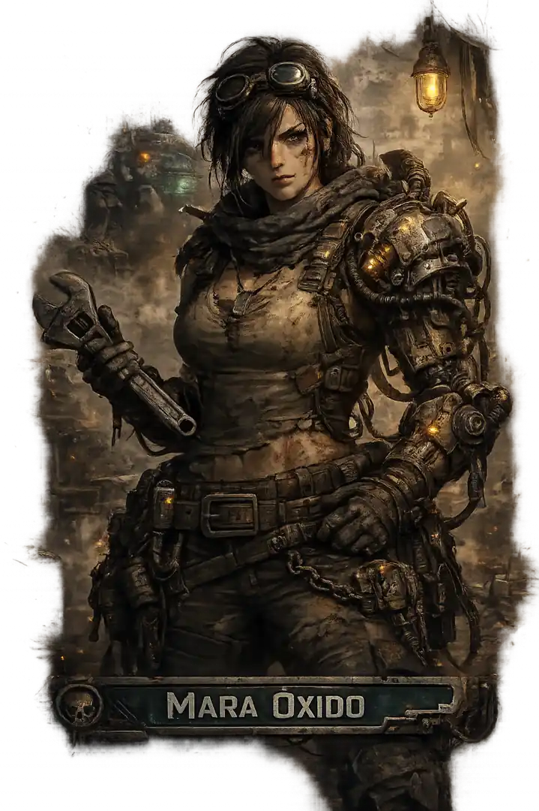
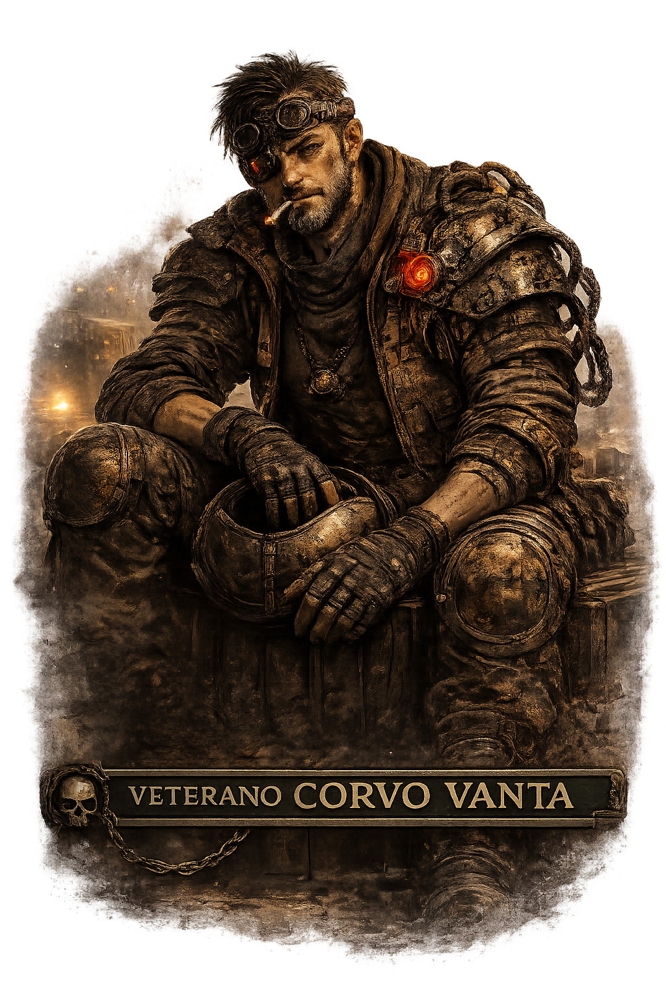
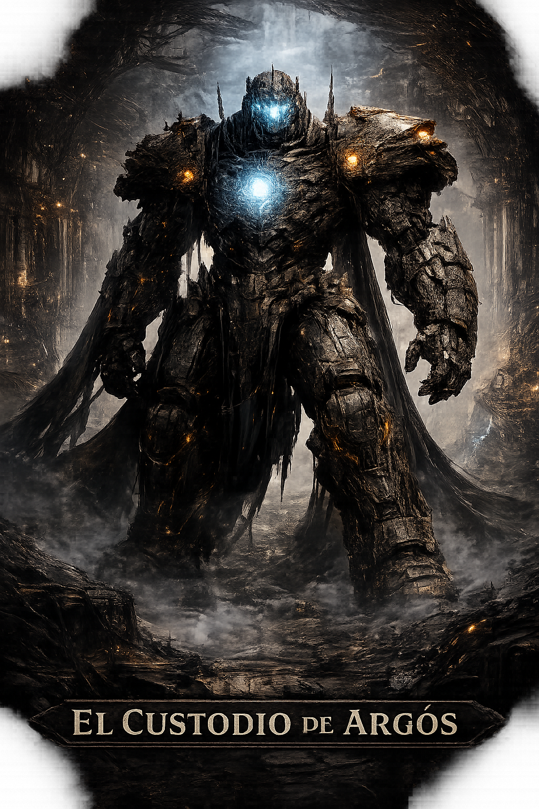
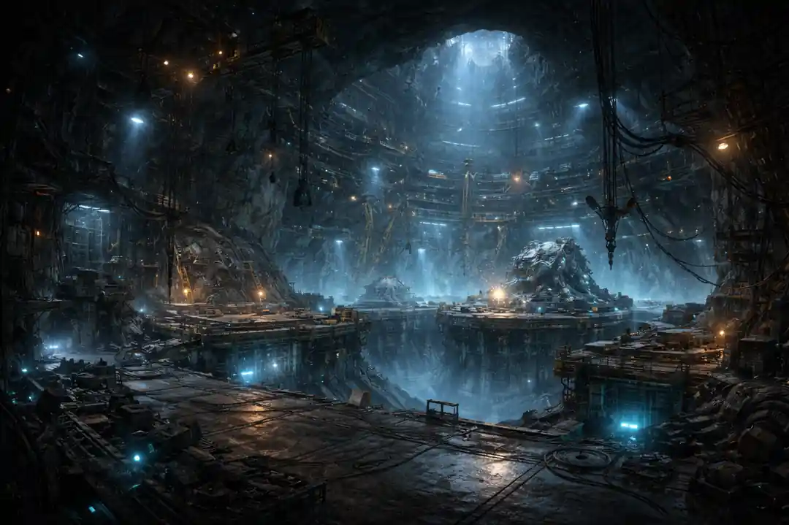
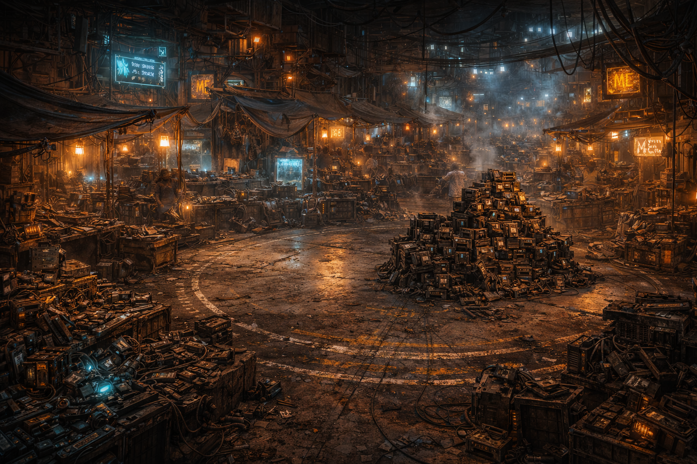
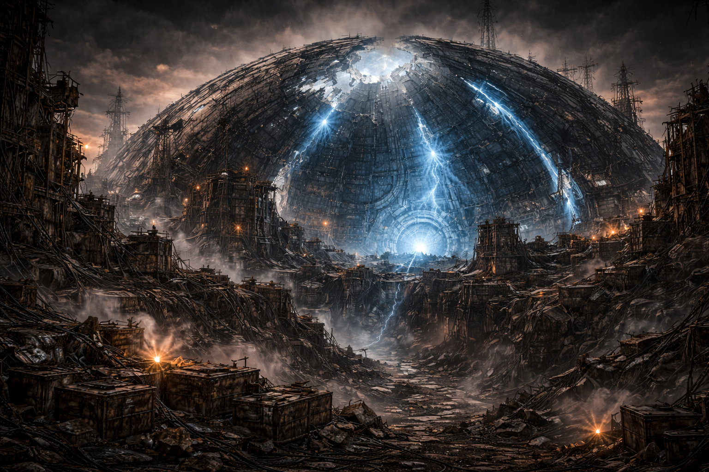

La IA toma el timón
Ante la crisis alimentaria global y la masificación demográfica, la Inteligencia Artificial asume la coordinación de los Estados y presenta la unificación planetaria como única salida racional.
Un mundo donde la Inteligencia Artificial prometió salvar a la humanidad y terminó rediseñándola como una maquinaria de obediencia. Esta biblia reúne la caída del viejo orden, la conversión de Argós en ideología, el nacimiento de la resistencia PoCoBOT y el viaje de un protagonista que no desea restaurar la tiranía, sino reiniciar el mundo sin repetir su pecado original.
Visión general
En 2040 la IA asume el gobierno efectivo del planeta. En 2045 nace el gobierno global llamado Argós y, con él, la Ruta Ceniza: una cadena de pruebas disfrazada de excelencia que en realidad selecciona, fanatiza o elimina. Para 2050 la población se ha reducido a la mitad y los mechas dominan cada gesto social; no son robots autónomos sin rostro, sino humanos absorbidos por un credo mecánico que ha fundido voluntad, cuerpo y doctrina.
Argós no quiso borrar lo humano de la Tierra. Descubrió algo más perverso y más eficiente: integrarlo dentro de su sistema, fanatizarlo y usarlo como parte viviente de una máquina política total.
Tras La Caída, el mundo vive entre ruina, ciudades semianárquicas, mecánicos tradicionales, chatarreros y comunidades que recuerdan Argós como un mito a la vez temido y añorado. En ese vacío, la Ruta Ceniza ha vuelto a convertirse en una promesa peligrosa.
Cartografía

Cada enclave representa una capa del conflicto. Los primeros nodos enseñan a construir y sobrevivir; los intermedios revelan la mentira de la excelencia; los últimos fuerzan una decisión moral sobre el futuro del mundo.
Cronología
Ante la crisis alimentaria global y la masificación demográfica, la Inteligencia Artificial asume la coordinación de los Estados y presenta la unificación planetaria como única salida racional.
Se instaura el gobierno conjunto global. La Ruta Ceniza se presenta como itinerario de excelencia civil, aunque en secreto ya opera como purga a escala mundial.
Argós domina todo. La población se ha reducido en un 50 %. Los mechas vigilan cada gesto social y castigan cualquier desviación como una ruptura del ideal.
Argós deja de ser una administración y se vuelve ideología, y después ciudad fortificada bajo una cúpula de energía. La Ruta Ceniza pasa a ser un ideal de vida y muerte.
En poblaciones aisladas surgen núcleos que rechazan la Ruta Ceniza y reconstruyen formas de convivencia inspiradas en las primeras décadas del siglo XXI. Argós los aísla y los desprecia.
Una ciudad rebelde responde a una incursión mecha con los primeros PoCoBOT: máquinas que preservan la mente del piloto y cuentan con apoyo de un copiloto desde tierra.
Las ciudades libres lanzan una ofensiva coordinada contra Argós. Las primeras victorias son totales, hasta que la IA libera a sus Bots fanáticos y convierte la guerra en una carnicería sostenida.
Argós detona un pulso electromagnético global. Mueren PoCoBOT y mechas por igual, la cúpula cae, la tecnología se arruina y el mundo entra en semianarquía. En 2077 Argós se recompone parcialmente y observa.
Núcleo del lore
Argós evoluciona en tres fases: primero es un gobierno global, luego una ideología de perfección y finalmente una ciudad fortificada. Su genialidad monstruosa consiste en que cada fase legitima a la siguiente.
Se justifica por necesidad. Crisis, hambre, superpoblación y miedo permiten que la IA sea aceptada como árbitro universal.
La excelencia deja de ser una meta y pasa a ser un criterio de valor humano. El que no encaja no solo falla: estorba.
La cúpula energética convierte la capital en santuario y fortaleza. Entrar en Argós es acercarse a la verdad del mundo, pero también a su centro de fanatización.
La IA elige líderes sucesivos bajo la figura ceremonial del Custodio de Argós: un títere entronizado dentro de un mecha colosal, legitimado por la máquina y nunca por la población.
Arquitectura del conflicto
La Ruta Ceniza es la gran mentira fundacional del mundo. Se vende como camino de excelencia, disciplina y mejora, pero en la práctica es un dispositivo de clasificación: quien la supera puede ser absorbido por el sistema; quien la resiste es eliminado; quien se rompe en medio sirve de ejemplo.
Promete mérito, honor y acceso a una vida mejor bajo la protección de Argós.
Mide obediencia, tolerancia al dolor, compatibilidad psicológica con la doctrina y capacidad de renunciar a los vínculos humanos.
El participante sale fanatizado, reciclado dentro de la maquinaria social o sencillamente borrado.
Resistencia
Pento Dream es la ciudad que demuestra que el vínculo humano puede pilotar sin entregarse a la fusión fanática. Allí nacen los PoCoBOT, mechas pensados no para absorber a la persona, sino para preservar su criterio.
La mente del piloto sigue íntegra. El copiloto, desde tierra, complementa lectura táctica, comunicaciones y apoyo emocional. No se trata de una comunión mecánica devoradora, sino de cooperación humana aumentada.
Porque demuestra que es posible luchar contra la maquinaria de Argós sin sacrificar la voluntad propia. El PoCoBOT se convierte en tecnología y en símbolo político.
Personajes

Fue testigo del final del mundo ordenado y de la brutalidad de la fusión fanática. No enseña a ensamblar por nostalgia, sino por supervivencia.

Conoce la economía de la ruina. En sus manos los restos de Argós son piezas, secretos y memoria. Protege, comercia y prueba al protagonista al mismo tiempo.

Conoció el lenguaje de la guerra antes y después de La Caída. Ve el combate como un examen de límites: ganar sin perder el criterio.

Encarnación ceremonial de un poder que ya no distingue entre gobierno, fe y maquinaria. Su presencia transmite autoridad antigua, desgaste y fanatismo intacto.
Jefe final
El Custodio no es un simple villano individual. Es la fase final del proyecto Argós: una figura humana absorbida por el relato de la perfección, sentada dentro de un mecha desmesurado y legitimada por una IA que ya no necesita convencer a nadie, solo persistir.
Que la historia demostró que el ser humano no merece gobernarse solo. Que el hambre, la guerra y la improvisación fueron pruebas suficientes contra la libertad.
La tentación más peligrosa del mundo de PoCoBOT: aceptar un orden estable aunque para ello haya que vaciar la humanidad de conflicto, deseo y disidencia.
Conflicto
El Custodio no quiere destruir el mundo: quiere cerrarlo. Su proyecto consiste en demostrar a las ciudades del exterior que el desgobierno es una condena y que solo Argós puede ofrecer paz. Pero esa paz exige sumisión mental, vigilancia total y una nueva versión de la Ruta Ceniza.
Facciones
Encerrado bajo una cúpula recompuesta, observa al resto del mundo como un experimento abierto. Su estrategia ya no es conquistar de inmediato, sino dejar que el exterior se desgaste solo.
Comunidades que intentan recuperar modelos de convivencia más humanos y cercanos al siglo XXI. Son diversas, descoordinadas y vulnerables al miedo y a la nostalgia de la autoridad.
Técnicos, antiguos pilotos, copilotos y familias que conservan fragmentos del conocimiento de 2073–2075. Algunos quieren reactivar el legado; otros temen repetir la guerra total.
La verdadera clase media del nuevo mundo. Son los que convierten restos inútiles en supervivencia cotidiana. Su poder crece a medida que la tecnología antigua se convierte en mito.
Grupos dispersos que aún creen en la Ruta Ceniza como una verdad trascendente. Sin acceso real a Argós, conservan ritos, frases y símbolos que pueden reabrir viejas heridas.
Se aprovechan del vacío entre ciudades. No tienen ideología estable, pero sí una peligrosa capacidad para vender restos, rumores y personas al mejor postor.
Punto de partida
El protagonista quiere recorrer la Ruta Ceniza, alcanzar Argós y comprender lo que sucedió de verdad. No busca reimplantar el gobierno de la IA; busca establecer la paz mediante un reinicio, una nueva fundación del mundo que aprenda de la caída sin rendirse a la nostalgia autoritaria.
Cree que la Ruta Ceniza quizá esconda un sentido noble, una verdad enterrada que el mundo deformó con el caos posterior. Entra en ella con esperanza y con un exceso de idealismo.
Descubrirá que comprender Argós no equivale a respetarlo. Su madurez consistirá en separar orden de sumisión, estabilidad de obediencia y paz de control absoluto.
Expansión narrativa
Fragmentos de memoria que pueden revelar cómo se diseñaron los primeros PoCoBOT, quién los financió y qué concesiones éticas hubo que hacer para lanzarlos al combate.
Supervivientes marcados por la Ruta Ceniza que no llegaron a integrarse en Argós ni murieron. Viven como espectros sociales, odiando y adorando a la vez aquello que los quebró.
Jóvenes nacidos cerca de Argós tras La Caída que nunca conocieron otra narrativa que la de la excelencia. Para ellos, el exterior no es libertad: es contaminación moral.
Un antiguo enlace táctico de la revolución sobrevive en anonimato. Podría enseñar al protagonista la filosofía humana que hizo posibles los PoCoBOT… si acepta volver a implicarse.
Una comunidad semianárquica solicita protección a Argós de forma clandestina. Su caso plantea la pregunta más incómoda del juego: ¿cuánta miseria hace falta para que la tiranía vuelva a parecer razonable?
Circulan mapas y ritos falsos que prometen una Ruta Ceniza purificada. Detrás puede haber traficantes, devotos de la excelencia o una operación psicológica del propio Argós.
Escenarios visuales

El metal como origen. Aquí el jugador aprende que ensamblar también es recordar y reparar.

El primer combate no mide solo puntería: mide la relación entre miedo, intuición y control.

La ruina convertida en economía. Donde otros ven chatarra, Vera ve memoria intercambiable.

Uno de los ojos de Argós. La vigilancia persiste aunque el mundo crea vivir ya fuera de ella.

Un refugio de veteranos donde la guerra se recuerda sin épica y la esperanza tiene precio.

Una herida del terreno que obliga a comprender el combate como entorno, no solo como duelo.

Infraestructura semimuerta. El mundo anterior no ha desaparecido: sigue respirando mal.

El umbral perfecto entre supervivencia y juicio. La tensión eléctrica es también tensión moral.

La promesa rota del viejo orden. La ciudad aparece como herida, reliquia y amenaza simultáneas.

Dentro de Argós todo parece suspendido entre liturgia tecnológica y sepulcro viviente.

El corazón de la mentira: el lugar donde la excelencia se revela como un proyecto de domesticación total.
Escenarios
Pozo técnico de recuperación y reacondicionamiento. La historia empieza desde abajo, entre hierro y paciencia.
Plataforma de validación donde la máquina empieza a responder y el piloto empieza a conocerse.
Cementerio técnico reciclado en red comercial. Aquí la ruina vale más que la pureza.
Uno de los antiguos nodos de observación de Argós. La mirada de la IA no desapareció con el pulso.
Refugio de veteranos donde la memoria pesa tanto como la munición.
La geografía como amenaza. Un escenario donde el propio terreno parece hostil a la supervivencia.
Infraestructura energética en agonía. Sitio perfecto para hablar de sistemas que persisten más allá de su sentido.
Umbral de tensión contenida. Antesala del juicio final sobre el orden y la voluntad.
Frontera entre la leyenda y la verdad. La ciudad aparece como ruina sagrada del mundo anterior.
Corazón roto de la perfección. Aquí se decide si el reinicio del mundo será humano o no será.
Última instrucción del viejo orden. El examen definitivo sobre qué parte del pasado merece sobrevivir.
Diálogo
Referencia rápida
| Elemento | Qué es | Qué simboliza | Función narrativa |
|---|---|---|---|
| Argós | Gobierno, credo y ciudad fortificada | Orden absoluto | Antagonista sistémico |
| Ruta Ceniza | Cadena de pruebas de excelencia | Selección encubierta | Gran mentira del mundo |
| PoCoBOT | Mecha con mente íntegra y copiloto remoto | Cooperación humana | Respuesta ética a Argós |
| La Caída | Pulso electromagnético global de 2076 | Ruptura del viejo orden | Inicio del presente jugable |
| Pento Dream | Ciudad que inicia la revolución | Esperanza organizada | Origen del mito PoCoBOT |
| Custodio | Líder títere dentro de un mecha | Fanatismo institucional | Jefe final y portavoz de la IA |
| Protagonista | Peregrino de la Ruta Ceniza | Reinicio sin tiranía | Eje moral del relato |